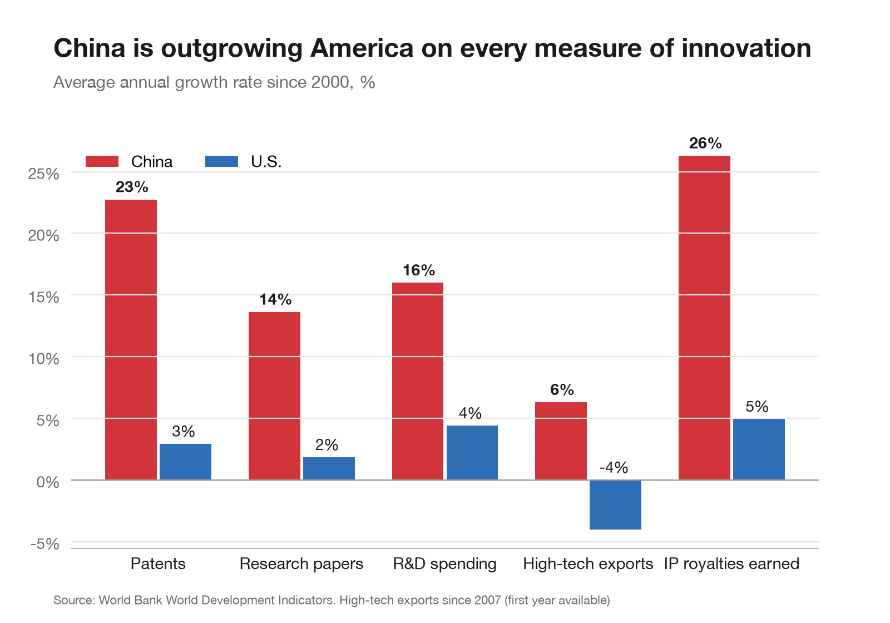
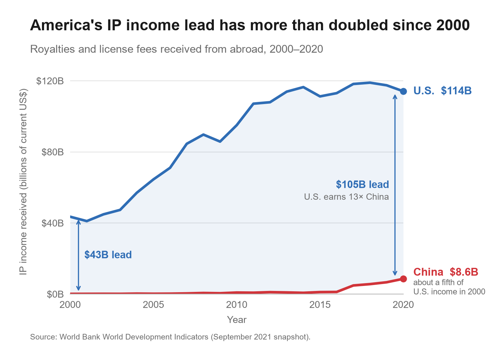

Proposition: China is beating the U.S. in the tech race.
Both visualizations use one dataset: the World Bank World Development Indicators, science and technology series (the September 2021 snapshot provided for the course), comparing China and the United States. Figure 1 argues for the proposition with growth rates; Figure 2 answers it with the same IP royalty data, shown in dollars instead.
Each design decision is scored from −2 fully deceptive +2 fully earnest
FOR the Proposition

Design Decisions and Rationale:
To fill in (S2 owner)
-
Replace
S2_growth_rates.pngwith the updated chart. Per the TA's feedback, add x- and y-axis titles and one or two annotations that point out what readers should notice. - Write the figure caption above.
- List 3–5 design decisions. Give each a score from −2 (fully deceptive) to +2 (fully earnest) in 0.5 steps, avoiding 0, plus a couple of sentences: why it persuades, what worked or didn't, and what alternatives you considered.
AGAINST the Proposition

Design Decisions and Rationale:
-
Picking IP income as the battleground Score: −1
Charges for the use of intellectual property give the U.S. a 13× lead, and Figure 1 uses the same series, so this chart reads as a direct rebuttal. The catch is that the indicator bundles patents with copyrights (film, music, software), trademarks and franchise fees, so the U.S. lead is not purely technological. We considered resident patent applications and high-tech exports instead, but China leads both (about 4.4× in 2019 and 5.3× in 2020), which would have undercut our side.
-
Absolute dollars on a linear, zero-based scale Score: +0.5
Plotting raw dollars on a conventional zero-based axis is the most literal encoding and lets readers check every value. It is also what flattens China's story: its IP income grew about 106-fold, from $0.08B to $8.6B, yet on this scale the red line barely leaves the floor. A log scale or an index (2000 = 100) would have shown China climbing far faster than the U.S., and a ratio chart would show the U.S. edge collapsing from 541× to 13×; we rejected all three because they argue the other side. We scored this slightly earnest because nothing is distorted: the persuasion comes from what a linear scale emphasizes.
-
Calculating and shading the “lead” Score: −1
We added a calculated field, U.S. minus China, and made it the visual subject: the gap between the lines is shaded and bracketed at both ends (“$43B lead” in 2000, “$105B lead” in 2020). An absolute gap can keep widening even while the trailing country catches up quickly, which is exactly what happened here. Bracketing only 2000 and 2020 also hides that the gap peaked at $115.7B in 2014 and has shrunk every year since 2017. We considered a third bracket at the 2014 peak but dropped it because it would draw attention to that recent narrowing.
-
A calm title that rests on nominal dollars Score: −1.5
“America's IP income lead has more than doubled since 2000” states a calculated fact ($43.4B to $105.5B is a 2.4× increase) in neutral wording, with no “dominates” or “crushes,” so it reads like reporting rather than advocacy. But it relies on current dollars: U.S. consumer prices rose about 50% from 2000 to 2020, so in real terms the lead grew by roughly 60%, not “more than doubled.” The y-axis title does say “current US$,” which keeps the chart technically accurate while counting on readers not to do the inflation math. Our earlier title, “America earns 13 times China's IP income,” was more defensible but invited the question of how fast that multiple is falling.
-
Earnest scaffolding: labels, definitions, source Score: +1.5
End-of-line labels ($114B, $8.6B) replace a legend, both axes are titled, the subtitle defines the measure in plain words, and the World Bank source and snapshot date are cited. Two annotations give readers concrete takeaways: the U.S. earns 13× China, and China's 2020 income is about a fifth of what the U.S. earned in 2000 (in nominal dollars, which if anything understates the gap). These choices are genuinely earnest and make the chart quick to read, but they also lend credibility to the framing choices above. Matching Figure 1's colors and typography lets the two charts be read side by side.
Final Reflection
To fill in (write-up)
2–3 paragraphs on the design process across both visualizations: what was straightforward or difficult, what surprised you, how you now define “ethical analysis and visualization,” and what bounds (if any) separate acceptable persuasive choices from misleading ones.